É oportuno salientar, que o preceito do vestuário é uma das doutrinas mais contestadas entre os religiosos, haja vista, que implica uma cruz, e só pode carregar essa cruz e outras que existem na doutrina cristã, quem deveras, possui natureza divina. É dever da Igreja de Deus ensinar aos membros a norma do vestuário, roupas simples adequada à exigência de Cristo, completamente destituida de qualquer ornamento, cores berrantes ou qualquer outra coisa que chame a atenção para sí e não para Cristo. O encargo de ensinar norma de vestuário não é só do Pastor, mas também do professor, conferir texto de White que diz:
Não poderá ser completa nenhuma educação que não ensine princípios corretos em relação ao vestuário. Sem tal ensino, a obra da educação é muitas vezes retardada e pervertida. O amor ao vestuário e a dedicação à moda acham-se entre os mais formidáveis oponentes e decididos embaraços que há para o professor.
Ellen G. White, Orientação da Criança, 1988, pág 419 / Educação, pág 246
A finalidade dos ensinos doutrinários e da educação cristã é preparar a igreja para receber a justiça de Cristo, cujo símbolo é o vestuário, razão pela qual a irmã White pergunta diretamente para as irmãs da igreja:
Minhas irmãs, vosso vestido ou está falando em favor de Cristo e da sagrada verdade, ou em favor do mundo. Qual será?
Ellen G. White, Orientação da Criança, 1988, pág 420 / Testemunhos para a Igreja 4, pág 641 / Testemunhos Seletos 1, pág 596
A resposta mais adequada é, depende da natureza que te alimenta, se por acaso escolheres acalentar a natureza pecaminosa, com efeito, o vosso vestido e sua vida religiosa vai testemunhar em favor do mundo, com suas modas, enfeites, ídolos e rejeição do vestuário apropriado, de outro lado:
Os que se acham empenhados nessa obra não se satisfarão com as modas e tolices que absorvem a mente e as afeições das mulheres nestes últimos dias. Caso sejam realmente filhas de Deus, serão participantes da natureza divina.
Ellen G. White, Testemunhos para a Igreja 3, pág 483 / Orientação da Criança, 1988, pág 436 / Testemunhos Seletos 1, pág 411
As filhas de Deus com certeza escolherão participar da natureza divina, cujos frutos, aborrece o mundo suas modas e o secularismo, não se envergonharão em usar o vestuário que fala em favor de Cristo, simbolo de sua natreza divina, com amor e alegria, rejeitando do fundo do coração tudo que não está em conformidade com a vontade de Deus.
Falai de Cristo, e quando o coração estiver convertido, tudo que não está em harmonia com a Palavra de Deus será banido.
Ellen G. White, Evangelismo, pág 272 / Eventos Finais, pág 88 / Orientação da Criança, 1988, pág 429
A Bíblia é nossa Constituição em matéria de fé, portanto, todas as normas doutrinárias estão compelidas a passar por esse crivo, o vestuário é um preceito moral, simboliza a natureza divina de Cristo que será revestida no crente penitente, voltando ao estado de Adão antes do pecado, desse modo.
Todas as questões de vestuário devem ser estritamente observadas, seguindo bem de perto a regra bíblica. A moda tem sido a deusa que governa o mundo exterior, e frequentemente se infiltra na igreja.
Ellen G. White, Testemunhos para a Igreja 5, pág 499 / Orientação da Criança, 1988, pág 430 / Conselhos para a Igreja, pág 258 / Testemunhos Seletos 2, pág 201
Assim como Satanás usou Balaão para incentivar os Hebreus a se contaminarem com mulheres Moabitas em Baal Peor, com a finalidade de afastar Deus do acampamento e os Hebreus se tornarem presas fáceis; este astuto enganador, não mede esforços para macular o símbolo da natureza divina de Cristo, o vestuário, com modas, adornos e ídolos, com o mesmo propósito de afastar o Senhor do meio do seu povo, que lhe ofereceu um sacrifício defeituoso contaminado pela justiça própria, relegando este preceito ao mero formalismo. Mesmo com todo esforço da Igreja de Deus na manutenção e ensino da doutrina do vestuário, sempre haverá opositores para criticar ou denegrir este preceito rejeitado por seus corações carnais, estes agentes que sempre resistem ao Espírito Santo, são a maioria, trilham o caminho largo e vem de longa data, mas, certamente colherão um resultado maléfico pagando um alto preço.
Em todos os séculos, uma maioria dos professos seguidores de Cristo tem desrespeitado esses preceitos que ordenam abnegação e humildade, que requerem modéstia e simplicidade de conversação, conduta e modo de vestir. O resultado tem sido sempre o mesmo — o afastamento dos ensinos evangélicos leva à adoção das modas, costumes e princípios do mundo. A piedade vital cede lugar ao morto formalismo. A presença e o poder de Deus, retirados dos círculos amantes do mundo, encontram-se com uma classe de humildes adoradores dispostos a obedecer aos ensinos da Sagrada Palavra. Através de sucessivas gerações esta orientação tem sido seguida. Umas após outras se têm erguido as diferentes denominações e, abandonando a simplicidade, perderam, em grande medida, seu primitivo poder.
Ellen G. White, Orientação da Criança, 1988, pág 430 / Mensagens aos Jovens, pág 354
Em todos os séculos a maioria dos homens, incluindo os religiosos, derespeitaram e se opuseram aos claros ensinos da Palavra de Deus. Embora não saibam, esta ingente maioria que palmilham o caminho largo adoram a Satanás, estão sob seu comando. Em sua infinita misericórdia e graça o Criador estabeleceu barreiras de contenção para salvaguardar sua Igreja desde a queda de Adão, quando o Senhor disse: Gênesis 3:15. Ao estabelecer inimizade entre a sua igreja e Satanás, o Senhor estabeleceu regras doutrinárias, e uma dessas regras está à forma de vestir sua igreja, símbolo da Justiça de Cristo. Satanás tenta derrubar esta barreira, com a intenção de afastar Deus do seio da Igreja, portanto, insta indagar, como ele vai fazer isso?
Satanás está continuamente procurando vencer o povo de Deus, derribando as barreiras que os separam do mundo.
Ellen G. White, O Grande Conflito, pág 513
Satanás aproxima a igreja do mundo atraindo os membros aos prazeres, deleites, modas e festas seculares, tal como o fez em Baal Peor; estimula os crentes a se envergonharem deste preceito ou cria vestes contaminadas por secularismo, enfeites ou ornamentos para não representar a justiça divina de Cristo. O Senhor não aceita dos membros de sua igreja vestimenta por metade, com mangas até o cotovelo, ou roupas curtas. Então:
Satanás inventou as modas que deixam os membros expostos.
Ellen G. White, Testemunhos para a Igreja 2, pág 532 / Orientação da Criança, pág 279
Quando Deus colocou inimizade em seus corações contra Satanás, mudou-lhes a maneira de vestir-se e os vestiu. Deus não aceita membros de sua igreja, atuar em seu serviço vestidos pela metade, por ser uma oferta defeituosa. Ademais, o Senhor julga o servo fiel do infiel de acordo com os frutos da natureza que move o cristão, aqueles que são movidos pela natureza divina, certamente adotarão as normas da igreja de Deus sem dificuldades, no entanto, aqueles que são movidos pela natureza pecaminosas, com certeza resistiram para não se submeterem aos ditames da doutrina de Cristo. Este é o propósito de Satanás, alimentar a natureza pecaminosa diminuindo a distância da igreja com o mundo e suas modas, infelizmente ele tem conseguido seu intento, porque:
A linha de separação entre cristãos professos e ímpios é agora dificilmente discernida. Os membros da igreja amam o que o mundo ama, e estão prontos para se unirem a ele; e Satanás está resolvido a uni-los em um só corpo, e assim fortalecer sua causa arrastando-os todos para as fileiras do espiritismo.
Ellen G. White, O Grande Conflito, pág 593
A irmã White descreve de forma precisa, que Satanás quebra a linha de separação ou inimizade da igreja de Deus com o mundo para escravizar os homens sob seu jugo utilizando as modas como deusa, acarretando grande fardo para as igrejas apostatadas, que parecem não se importar:
Metade dos seus fardos advêm da tentativa de seguir as modas; contudo, elas aceitam ansiosamente o jugo, porque a moda é o deus que adoram. Acham-se tão verdadeiramente presas em cadeias de servidão como o mais autêntico escravo; e, no entanto, falam de independência! Não conhecem os primeiros princípios da independência. Não têm vontade, gosto ou critério próprios. São mundanas, sem Deus e sem esperança.
O gosto correto no vestuário não deve ser desprezado ou condenado. Conquanto tufos, enfeites e ornamentos desnecessários devam ser omitidos.
Ellen G. White, Mensagens Escolhidas 3, 1987, pág 245
Amados irmãos e irmãs, infelizmente alguns membros tem se distanciado de Cristo e sua justiça, curvando os joelhos a Satanás, atraídos por modas sedutoras, secularismo e ornamentos inúteis, estão acorrentados como verdadeiros escravos e pensam estar livres. Os próprios líderes religiosos em quem os sequazes tanto confiam estão II Pedro 2:19.
Satanás entrou nas igrejas e tenta ingressar na igreja de Deus ocupando corações de membros que estão brincado de gato e rato com Cristo, em tais corações Satanás achou um campo fértil para semear dúvidas e amor ao vestuário secular curvando seus joelhos no altar da deusa modas e não diante de Cristo. O grande enganador endurece os corações rebeldes para não receber luz divina da natureza de Cristo, corroendo a igreja com apostasia separando-a inteiramente de Deus e de suas promessas:
Não brinqueis, minhas irmãs, por mais tempo com vossa própria alma e com Deus. Foi-me mostrado que a principal causa de vossa apostasia é o amor que tendes ao vestuário. Isto leva à negligência de sérias responsabilidades, e mal vos achais possuidoras de uma centelha do amor de Deus no coração. Renunciai, sem demora, à causa de vosso desvio, pois é pecado contra vossa própria alma e contra Deus. Não vos endureçais pelo engano do pecado. A moda está deteriorando o intelecto e carcomendo a espiritualidade de nosso povo. A obediência à moda está penetrando nossas igrejas, fazendo mais que qualquer outro poder para separar nosso povo de Deus.
Ellen G. White, Testemunhos Seletos 1, 1984, pág 600 / Conselhos sobre Saúde, pág 603
Ao longo dos séculos Satanás trabalha na criação de modas, com o escopo de deixar os braços e as pernas das irmãs de fora. Um número considerado dessas irmãs tem acatado as sugestões do inimigo e favorecido seus trabalhos em detrimento do amor e submissão a doutrina de Cristo, entre elas o vestuário, envergonhando a Igreja e algumas vezes a expondo ao ridículo dando oportunidade aos inimigos da verdade criticar e escarnecer da Igreja de Deus.
Satanás começou seu trabalho de apostatar as igrejas iniciando pelo vestuário. Hoje os pastores defendem que as irmãs adventistas podem usar calças compridas tanto fora como dentro da igreja, alegando que existe calça de homem e calça de mulher. É cediço que a Igreja Adventista do Sétimo Dia, não tem norma de vestuário, as irmãs usam roupas curtas, bermudas, minissaias etc. Neste contexto, deveras, eles têm razão em defender o uso de calças compridas, haja vista, que as irmãs estão mais bem vestidas do que o atual traje adotado pela igreja. Agora, se a aludida igreja não tivesse abandonado o preceito do vestuário adequado para mulher cristã, será que poderiam defender essa tese?
O propósito de Satanás é claro e cirúrgico, apostatar a Igreja com a retirada dos marcos doutrinários, com isto, Deus se separa da igreja que se torna incrédula e desamparada. Ele vai formular caminho com atalho que parece o mais ajustado aos padrões da sociedade, no entanto, Provérbios 14:12. A criação de inúmeras doutrinas é outro engodo do inimigo para confundir e afastar as igrejas da doutrina cristã e de Deus, a pena da irmã White nos ratifica esta verdade:
Inumeráveis são as doutrinas errôneas e as fantasiosas idéias que estão ganhando terreno entre as igrejas da cristandade. É impossível avaliar os maus resultados de remover um dos marcos que foram fixados pela Palavra de Deus. Pouco dos que se arriscam a fazer isto param com a rejeição de uma única verdade. A maioria continua a pôr de lado, um após outro, os princípios da verdade, até que se tornam efetivamente incrédulos.
Ellen G. White, O Grande Conflito, 1985, pág 530
Quando o assunto é a doutrina cristã, os religiosos criam comichão nos ouvidos para nem ouvir, em especial o vestuário, propiciando um cenário em que a incredulidade reina soberana nos braços de Satanás que alimenta a incredulidade nos corações dos professos religiosos.
Há séculos que Satanás tenta entrar na Igreja de Deus, fomentando baixar as normas. Na época da irmã White, o inimigo das almas criou um modelo de vestuário feminino semelhante ao vestuário masculino que ficou conhecido como traje americano, criando verdadeira comoção na igreja, será que irmã White aprovou este modelo de vestuário? Vamos conhecer o famigerado traje americano, estudando-o minuciosamente e quais atitudes a igreja da época da irmã White tomou.
A REFORMA DO VESTUÁRIO
O Traje Americano ou Bloomer
Antes de discorrer acerca do tema, em que pese a doutrina do vestuário, suas consequências e medidas adotadas pela irmã White, se faz mister invocar a História para conhecermos como surgiu esse modelo de roupa.
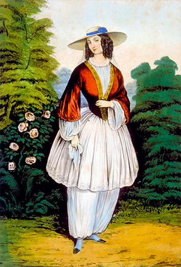Em 1852, Elizabeth Smith Miller, defensora e apoiadora financeira do movimento feminista, finalmente decidiu colocar um basta em seu descontentamento quanto ao vestuário feminino de sua época. Para ela, aquela maneira de vestir era mais um símbolo da diferença entre o homem e a mulher. Assim, decidiu que não usaria mais aquele vestido, mas "calças turcas" – calças compridas até a altura do tornozelo – com um vestido curto que terminava um pouco abaixo dos joelhos. Ao visitar a prima, Candy Stanton, foi apresenta à sua amiga, Amelia Bloomer. As duas ficaram maravilhadas com o estilo revolucionário de Elizabeth e imediatamente adotaram o modelo. Amelia publicou em um jornal o novo vestuário e à partir daí o traje ficou popularmente conhecido como "bloomer", em homenagem a Amelia. Em pouco tempo outras mulheres adotaram o novo estilo também e passaram a usar calças. No entanto, nem todos aprovaram a nova proposta de vestuário.
Disponível em: <http://www.tudoparavegetarianos.com.br>
Elizabete Smith era feminista declarada e queria diminuir a desigualdade entre homens e mulheres, para ela o vestuário era a causa de tamanha distinção entre os sexos, então criou o modelo semelhante à veste masculina, confira figura ao lado. Eram calças compridas, largas, com um vestido curto por cima. Vejam que este modelo de vestuário é muito mais decente do que as calças femininas de hoje, em que pese, os pastores adventistas estão defendendo e introduzindo na igreja como a solução para cobrir a nudez das irmãs.
Apesar da feminista Elizabete Smith, criar o modelo de vestuário semelhante ao masculino, quem deveras, popularizou e introduzir na sociedade americana foi a advogada Amélia Bloomer, razão pela qual o novel modelo de vestuário foi estigmatizado com o seu nome, conforme artigo extraido da Internet:
O Bloomer original foi uma peça de vestuário inventada pelas americanas Elizabeth Smith Miller e Fabrizia Flynn, mas popularizada por Amelia Bloomer no início de 1850. Amelia era advogada e lutava pelos direitos das mulheres, por isso a peça recebeu o nome dela.
Bloomers eram calças largas, compridas e folgadas que se estreitavam na altura dos tornozelos e usadas por baixo das saias.
Mas poucas mulheres usavam a peça, e as que usavam eram ridicularizadas e insultadas pela imprensa. Só que muitas das mulheres que usavam a peça estavam profundamente envolvidas na "reforma do vestuário", na abolição da escravatura e do movimento pelos direitos das mulheres - eram as primeiras feministas, que reclamavam das restrições das roupas e da saúde. O bloomer acabou sendo adaptado também para as meninas e para educação física feminina.
Disponível em: <http://www.modadesubculturas.com.br>
Precisamos adentrar em outro tópico para indagarmos o que foi o movimento feminista? E, qual o objetivo do Movimento Feminista? Segundo Oliveira (1969) citado por Nogueira (n.d.) o, "Feminismo" pode ser definido como um "movimento social cuja finalidade é a equiparação dos sexos relativamente ao exercício dos direitos cívicos e políticos" (p.424).
Bem, o que essas informações têm a ver com o nosso assunto de vestuário? Amélia Bloomer, a mulher que ousou impor uma reforma espúria do vestuário em sua época, final do século XIX, era ligada ao Movimento Feminista. Conforme relata o texto:
Amélia Bloomer era ativista sufragista americana, e lutava pelos direitos das mulheres. Seu marido incentivava-a escrever para um jornal, o Lily, que continha cerca de 6000 assinantes e tinha os escritos voltados para o assunto de temperança. O jornal, porém, também foi direcionado para publicações sobre o direito das mulheres, incluindo tópicos de desigualdade de oportunidades educacionais, de casamento e de propriedade, sufrágio, etc. Movida pelo desejo de acabar com as modas dominantes de sua época, como os espartilhos e as saias longas, implementou uma reforma que visava a liberdade.
Salão Nacional de Mulheres da Fama, 1995; Alexandra & Anita, 2006
Segundo o encimados texto, um dos objetivos precípuo do movimento feminista era diminuir as diferenças entre os sexos, como também, acabar com as saias longas implementando uma reforma no vestuário. No entanto, a raiz do famigerado movimento tinha profundas ligações com o espiritismo moderno que estava florescendo na época com as pancadas misteriosas das irmãs Fox. Vejam o texto seguinte:
"Além de desafiar a ordem de Deus expressa em Sua Palavra, o movimento feminista possui fortes laços com o espiritismo. A Srta. Stanton, juntamente com outras líderes feministas, tinham forte interesse pelo mundo espírita. Na verdade, na ocasião em que ela ajudou a redigir a "Declaração dos Direitos e Opiniões" feministas, espíritos começaram a bater na mesa."
Uma das integrantes do movimento feminista. A Srta. Stanton ousou criar The Women"s Bible [A Bíblia da Mulher], uma versão da Bíblia em que os comentaristas tentam justificar os textos que apresentam as diferenças entre o homem e a mulher. Ela escreveu:
Não creio que homem algum jamais viu ou conversou com Deus, não creio que Deus inspirou o código mosaico, ou revelou aos historiadores o que eles relatam que Ele fez com relação à mulher, pois todas as religiões da face da Terra a degradam, e enquanto as mulheres aceitarem a posição a ela designada, sua emancipação será impossível… A lei canônica, as Escrituras, os credos e os códigos e a disciplina da igrejas predominantes carregam a imagem do homem falível…
Elizabeth Cady Stanton, The Woman"s Bible, part 1, p. 12-13
Isso é feminismo. Essas foram as primeiras mulheres norte-americanas a usarem calças.
Lacey Brinley, Feminism or Femininity
O movimento feminista aflorou na época da irmã White e chegou a igreja Adventista juntamente com o traje americano, como uma gélida e sombria ameaça para denegrir a doutrina do vestuário, obrigando-a a usar a pena e reprender os que se inclinavam a adotar tal movimento, declarando que o acolhimento desse movimento e adoção do traje americano seria um rompimento com a Mensagem do Terceiro Anjo:
Os que se sentem convocados a unir-se ao movimento em prol dos direitos da mulher e da suposta reforma do vestuário, podiam romper toda ligação com a mensagem do terceiro anjo. O espírito que acompanha um movimento não pode estar em harmonia com outro. As Escrituras são claras a respeito dos procedimentos e direitos de homens e mulheres. Os espiritualistas adotaram totalmente esse singular modo de trajar-se.
Ellen G. White, Testemunhos para a Igreja 1, 2000, pág 457
Na primeira fase do movimento feminista, Satanás criou modelo de calças compridas e fomentou o uso pelo sexo feminino, estava apenas iniciando a quebra de barreiras de contenção que Deus havia estabelecido para proteger sua igreja, seu alvo, ainda é quebrar todas as barreiras que separam a Igreja do mundo e seus prazeres. Este movimento ficou hibernando por um período, enquanto o inimigo articulava e preparava o terreno para investir com força total logrando êxito em sua empreitada.
A nova investida, no entanto, ocorreu na década de 1960, na segunda onda do feminismo, veio com a conhecida revolução cultural, criou-se o vestuário unissex e as calças se tornaram um símbolo da rebelião feminina e sua nova função – não mais a auxiliadora e aquela que completa o homem, mas sua adversária e concorrente. Agora, nos dias hodiernos, Satanás investiu e quebrou a resistência das igrejas, as calças estão dentro das igrejas, defendida por Ministros e Pastores.
Será que os pastores têm razão, em defender a tese de que existe clara distinção entre calça masculina e calça feminina?
Quem está acobertado com a natureze divina de Cristo, vislumbra claramente que não existe calça masculina e calça feminina no contexto da Palavra de Deus, são os estilistas, criadores de modas, que dão esta conotação alterando alguns modelos com meros detalhes de estampas, recortes e cores, classificando-as como calças masculinas, femininas ou unisex, para Deus não faz diferença, vestuário masculino é totalmente diferente do vestuário feminino. Para o Criador é inaceitável tal proposta e uma abominação o uso de vestuário masculino semelhante ao feminino pelos membros de sua Igreja. O Senhor é Onisciente, portanto, sabia que Satanás tentaria fomentar essas tendências para contaminar seu povo, razão pela qual o Senhor adverte seus atalaias:
Há uma crescente tendência de as mulheres serem em seu vestuário e aparência tão semelhantes ao outro sexo quanto possível e de confeccionarem seu vestuário muito semelhante ao do homem, mas Deus declara que isso é uma abominação. "Que do mesmo modo as mulheres se ataviem em traje honesto, com pudor e modéstia." 1 Timóteo 2:9.
Ellen G. White, Testemunhos para a Igreja 1, 2000, pág 457 / Orientação da Criança, pág 279
Satanás usou a mesma tática que derrubou Eva, para invadir as igrejas hodiernas, inverteu a verdade, quando disse que se ela comesse não morreria, amargo engano, da mesma forma ele inverte a ordem de Deus falando pela boca e pena de pastores apostatados que existe calça masculina e calça feminina, portanto, as irmãs podem usar calça feminina que estão com as pernas mais cobertas do que com o vestuário usual. A imitação de vestuário do sexo oposto é abominação para Deus. O Senhor usou a irmã White para repreender tal ensinamento e ordenar que suas servas usem vestuário de conformidade com as Escrituras, assim ela escreveu:
As mulheres cristãs devem seguir a Cristo e fazer seus vestidos em conformidade com a Palavra de Deus.
Existe ainda outro estilo de vestido adotado pela classe de supostas reformadoras do vestuário. Imitam o máximo possível o sexo oposto. Usam bonés, calças, coletes, paletós e botas, sendo estas últimas as partes mais destacadas no traje.
Nesse estilo de vestuário a ordem de Deus foi radicalmente invertida e desatendidas Suas instruções especiais. "Não haverá trajo de homem na mulher, e não vestirá o homem veste de mulher; porque qualquer que faz isto abominação é ao Senhor, teu Deus." Deuteronômio 22:5. Deus proíbe que Seu povo adote essa moda.
Ellen G. White, Testemunhos para a Igreja 1, pág 460
Amados irmãos, este texto é limpido como a luz do sol, é um ASSIM DIZ O SENHOR. Deus proibe terminantemente que seu povo adote a moda de calça feminina, Ele considera uma abominação para sua Igreja, a irmã White ainda fundamenta com uma repreesão do apóstolo Paulo:
Esta moda de vestuário Deus não deseja que Seu povo adote. [...] Paulo pronunciaria uma repreensão, fosse ele vivo hoje, se contemplasse mulheres que professam piedade usando esta moda de vestuário.
Ellen G. White, Testemunhos para a Igreja 1, pág 457 / Mensagens Escolhidas 2, 2000, pág 477-478
O Senhor ordenou para sua Igreja se abster de adotar vestuário masculino semelhante a vestuário feminino, exigiu uma clara distinção com respeito ao vestuário do homem e da mulher, advertindo que o acolhimento de vestimenta semelhante para ambos os sexos resultaria em confusão e aumento da criminalidade, esta profecia se cumpriu.
Os céticos ao preceito do vestuário, acreditam que não tem nada a ver, hoje podemos claramente constatar que a criminalidade é galopante, observa-se que desde a década de 60, quando o movimento feminista infiltrou o vestuário semelhante para ambos os sexos no mundo que a criminalidade se desenvolveu a medida que a corrupção era alimentada por naturezas pecaminosas, divorciadas de Deus, que os repreendeu por não obedecer sua Lei:
Isaías 30:9. Na mesma direção converge os ensinamentos da irmã White, que relatou:
Deus determinou que houvesse clara distinção entre trajes masculinos e femininos, e considerou o assunto de suficiente importância para dar explícitas instruções a esse respeito, pois se o mesmo traje for usado por ambos os sexos, causaria confusão e grande aumento de crime. Se o apóstolo Paulo estivesse vivo e contemplasse as mulheres que professam piedade usando esse tipo de vestuário, pronunciaria a repreensão: "Que do mesmo modo as mulheres se ataviem em traje honesto, com pudor e modéstia, não com tranças, ou com ouro, ou pérolas, ou vestidos preciosos, mas (como convém a mulheres que fazem profissão de servir a Deus) com boas obras." 1 Timóteo 2:9, 10. A maioria dos professos cristãos, desrespeitam totalmente os ensinos dos apóstolos, usando ouro, pérolas e vestidos custosos.
Ellen G. White, Testemunhos para a Igreja 1, pág 460 / Mensagens Escolhidas 2, pág 478 / Orientação da Criança, pág 427
Mesmo com toda repreensão e cuidado por parte dos atalaias, Satanás tentou introduzir a famigerada moda na igreja Adventista no tempo da irmã White, que por inspiração divina, a serva do Senhor tomou atitude totalmente diferente dos pastores Adventistas de hoje que adotam tal vestuário, ela reprovou com veemência tal vestimenta para a Igreja de Deus em todas as épocas, escrevendo:
A assim chamada reforma do vestuário porta um espírito de leviandade e ousadia que se ajusta perfeitamente ao vestuário adotado. Modéstia e recato parecem desviar-se daqueles que adotam esse estilo de vestir. Foi-me mostrado que Deus requer que tenhamos uma conduta coerente e sensata. Adotem as irmãs o traje americano, e destruirão a própria influência e a de seus maridos.
Esse testemunho me foi dado como reprovação para as irmãs que se sentem inclinadas a adotar um estilo de vestuário criado para os homens.
Ellen G. White, Testemunhos para a Igreja 1, 2000, pág 458
Muitas irmãs ficaram ansiosas por usar a novidade, houve tumulto na igreja acerca do tema, o que obrigou a irmã White se manifestar:
No Testemunho Para a Igreja n° 10, declarei o seguinte:
Deus não deseja que Seu povo adote essa pretensa reforma de vestuário. Trata-se de um vestuário ousado, completamente inadequado às modestas e humildes seguidoras de Cristo.
Ellen G. White, Testemunhos para a Igreja 1, 2000, pág 456-457 / Mensagens Escolhidas 2, pág 477 / How to Live, pág 398
Mesmo com todas as repreensões e manifestações contrárias ao abominável uso de vestimenta semelhante para ambos os sexos, houve irmãs que estavam ávidas por adotar tal vestuário na igreja, então cuidou de espalhar a notícia de que irmã White não só adototava como usava o traje americano, juntamente com as irmãs de Battle Creeck, sede da direção da igreja. A essa leviandade a irmã White respondeu com um provérbio escrevendo:
Circulam informações de que a "irmã White usa o traje americano", e que esse estilo de vestimenta é geralmente usado pelas irmãs de Battle Creek. Lembrei-me agora de um provérbio que diz: "Uma mentira dá volta ao mundo enquanto a verdade põe as botas".
Ellen G. White, Testemunhos para a Igreja 1, pág 463
Para pulverizar qualquer resquicio de dúvidas de que Deus não aceita o uso de calças femininas, chamado traje americano ou Bloomer a irmã White descreveu o famigerado traje e mais uma vez reprovou com estando em desacordo com as Escrituras:
O chamado traje americano, parecendo mais com os trajes masculinos. Consiste de colete, calças e uma peça semelhante a um casaco, que vai até a metade da coxa. Oponho-me a esse tipo de vestimenta, pois me foi mostrado como estando em desacordo com a Palavra de Deus.
Ellen G. White, Testemunhos para a Igreja 1, pág 465
Abaixo destacamos modelos do traje americano ou Bloomer, todos reprevados pela Palavra de Deus. Vale destacar que o traje americano, ou traje bloomer, era muito mais decente e feminino do que as calças femininas atuais que os pastores adventistas defendem e, mesmo assim, foi reprovado pela mensageira de Deus, como uma abominação para a igreja de Cristo.
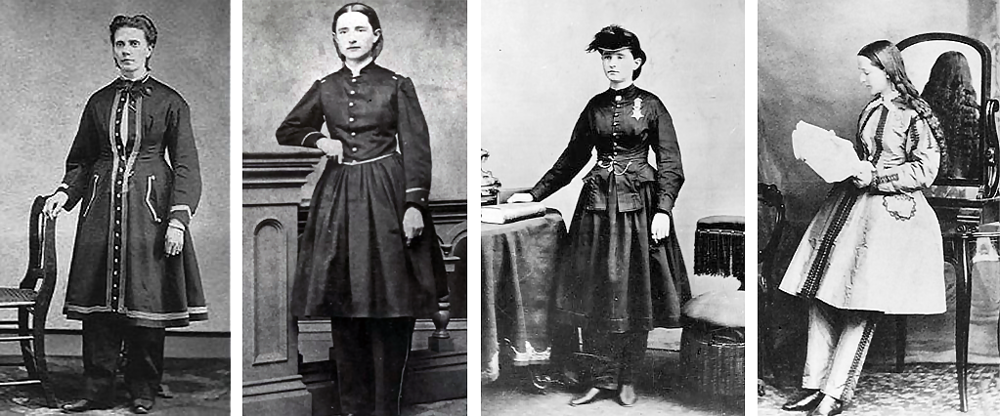De fato, Satanás tentou introduzir este famigerado traje americano na igreja dos pioneiros Adventista, com o nome de reforma do vestuário, no entanto, foi tolhida sua entrada na igreja na época da irmã White, ela trouxe para a igreja a luz do Senhor declarando:
Deus não deseja que Seu povo adote essa pretensa reforma de vestuário. Trata-se de um vestuário ousado, completamente inadequado às modestas e humildes seguidoras de Cristo.
Ellen G. White, Testemunhos para a Igreja 1, 2000, pág 457 / Mensagens Escolhidas 2, pág 477 / How to Live, pág 398
Neste exemplo, vislumbramos que nem sempre o que parece reforma pode ser introduzido na igreja como um benefício, depende de qual espírito a reforma é motivada, se por reavivamento da natureza divina ou da natureza pecaminosa, se for impulsionada pela natureza divina os frutos são modéstia, pudor, causando influência para o bem, falando em favor de Cristo e sua Doutrina, no entanto, o traje americano ou vestimenta semelhante ao sexo oposto, trouxe os frutos da natureza pecaminosa contrária as santas Escrituras, com influências deletérias para a igreja, segundo relatos de White:
A suposta reforma do vestuário é acompanhada de um espírito frívolo e audacioso. A modéstia e o recato parecem ter-se afastado de muitos que adotam esse estilo de vestuário. Foi-me mostrado que Deus requer que adotemos uma conduta coerente e explicável. Se as irmãs adotarem o traje americano, anularão a própria influência e a de seus maridos.
Ellen G. White, Testemunhos para a Igreja 1, 2000, pág 422 / Crede em Seus Profetas, 1955, pág 263
Por fim, não podemos olvidar os claros ensinamentos da Palavra de Deus, esculpidas no livro de Mateus Mateus 5:14-16.
O Traje da Reforma
Conforme estudamos alhures. Quando Adão e Eva pecaram, perderam a veste de luz e glória e com ela sua natureza divina, ficaram sob domínio de Satanás. Sabendo do simbolismo do vestuário, o inimigo, criou modas e ensinou os crentes a vestir-se de forma a não representar o salvador neste particular. Para não satisfazer a nossa natureza pecaminosa e desagradar ao Criador, devemos nos vestir com modelos de vestuário que estejam de acordo com as Escrituras, para isso, antes de confeccionar ou comprar nossas vestes, precisamos acolher os sábios conselhos das Escrituras que diz: Sofonias 2:3. Verdade, não podemos nos esconder do Senhor, tão pouco apresentar desculpas por nossas negligências ou autossatisfação para nos vestir de acordo com nossas carnalidade, contrariando a instrução do Senhor, a começar por negar beber na fonte de sabedoria e instrução o que convém aos santos, alicerçados por sua naturea divina para andarmos de conformidade com sua vontade. Preocupada com as irmãs que confeccionam modelos de vestuários de acordo com sua natureza, ela fez um apelo:
Solicito a vocês, irmãs, não confeccionem modelos segundo suas próprias idéias. Conquanto haja modelos corretos e de bom gosto, há também os impróprios e de mau gosto.
Ellen G. White, Testemunhos para a Igreja 1, 2000, pág 522-523
A igreja precisa estar unida e andar de braços dados com a verdade, ajustados com a doutrina, segundo a irmã White, temos uma obra a realizar em prol da verdade, ela escreveu:
Eis nossa obra. Não é aos pecadores que se dirige esta mensagem, mas a todos os mansos da Terra, que põem por obra o Seu juízo, ou que guardam os Seus mandamentos. Há trabalho para todos, e se todos obedecerem veremos uma suave união nas fileiras dos guardadores do Sábado.
Ellen G. White, Testemunhos para a Igreja 1, 2000, pág 427
Com efeito, se a igreja andasse unida com Cristo e afinada com sua Doutrina, não teriamos problemas de apostasia e rebeldia, todos amariam e obedeceriam os preceitos e Leis do Senhor, irmãos e irmãs certamente confeccionariam e comprariam vestuário de acordo com as normas da igreja, antes de comprar, certamente tomariam conselhos e inclinariam os ouvidos para ouvir e atender os claros ensinamentos de Ministros e Pastores do pequeno rebanho do Senhor, portanto, os irmãos e irmãs, que cultivam a sabedoria da natureza divina, acolherão os conselhos do apóstolo Paulo que certa vez escreveu à Timóteo com a seguinte exortação: I Timóteo 4:16. É cediço que somos um povo diferente de todos os povos, sempre foi assim, portanto, não podemos nos envergonhar dos preceitos da igreja de Deus, mas reverenciar a Deus adotando-os em nossa vida com amor, quer seja a barba, cabelo ou vestuário, o certo é tomar cuidado para que:
Nenhuma ocasião deve ser dada aos descrentes para criticar nossa fé. Somos considerados esquisitos e diferentes, e não devemos seguir um procedimento que leve os descrentes a assim nos julgarem, mais do que nossa fé requer que sejamos.
Ellen G. White, Testemunhos para a Igreja 1, 2000, pág 420 / Testemunhos Seletos 1, pág 169
Com certeza somos diferentes, haja vista, o contraste existente entre a Palavra de Deus, as modas e os prazeres do mundo, no entanto, não podemos ser ridículos adotando modas deletérias. Se o mundo criar modas imitando o vestuário do povo de Deus, não devemos abandonar nossos modelos de vestuário por essa razão, o que não podemos é denegrir a imagem do símbolo da natureza divina de Cristo com as modas, enfeites e decotes sensuais, acreditando que estamos beirando ao ridículo se não acompanhar o mundo e suas modas. A irmã White que sempre ensinou e defendeu o uso do vestuário apropriado, escreveu:
As mulheres cristãs não se devem dar a trabalhos para se tornarem objeto de ridículo por vestir diferentemente do mundo. Mas, se seguindo suas convicções de dever a respeito do vestir modesta e saudavelmente, elas se acham fora da moda, não devem mudar de vestuário a fim de ser semelhantes ao mundo; porém manifestar nobre independência e coragem moral para ser corretas, ainda que o mundo inteiro delas difira. Caso o mundo introduza um modo de vestir decente, conveniente e saudável, que esteja em harmonia com a Bíblia, não muda nossa relação para com Deus ou para com o mundo ou adotar tal estilo de vestuário. As mulheres cristãs devem seguir a Cristo e fazer seus vestidos em conformidade com a Palavra de Deus. Devem evitar os extremos. Devem elas adotar humildemente uma conduta reta, apegando-se ao direito por ser direito, sem se preocupar com aplausos ou censuras.
Ellen G. White, Testemunhos para a Igreja 1, 2000, pág 458
No tempo da irmã White Satanás não mediu esforços para adentrar na igreja com modas seculares, ele criou o vestuário americano, as saias-balão e as saias longas ao extremo varrendo as ruas, as portas foram fechadas para ele, isso não significa que ele tenha desistido. Hoje, as irmãs estão cobertas de dúvidas e indagando:
Como nos vestiremos? Cumpre-me ter sempre em mente que devo ser um exemplo, e portanto não devo correr atrás desta ou daquela moda, mas seguir uma conduta uniforme e independente e não ser induzida a extremos com relação ao vestuário. Pôr de lado minha saia de alças que foi sempre modesta e confortável, e pôr-me em uma fina saia de algodão, e dessa maneira parecer ridícula em outro extremo, seria um erro, pois assim eu não seria um exemplo correto, mas poria um argumento na boca das que usam saia-balão.
Ellen G. White, Testemunhos para a Igreja 1, 2000, pág 425 / Conselhos sobre Saúde, pág 604
O encimados texto requer séria reflexão, quando ela recusa trocar sua saia de alça, modesta e confortável por uma saia fina de algodão, é porque a Palavra de Deus proibe usar vestidos finos, tranparentes. No entanto, muitas irmãs estão trocando suas saias decentes por saias de pano fino ou vestidos transparente a ponto de ficar tortalmente a mostra quando passam por uma porta. Amadas irmãs uma das funções do vesuário apropriado é exatamente evitar o sensualismo, para isso, o corpo não deve ficar a mostra.
Já estudamos e concluimos que a doutrina do vestuário é assunto que precisa ser levado a sério pela direção da igreja, órgão responsável para tomar as providências necessárias para manter a norma do vestuário de conformidade com os ditames da Palavra de Deus, ainda que para isso precise disciplinar ou cortar os renitentes e rebeldes. Com certeza, alguns irmãos acham exagerado disciplinar ou cortar alguém por conta do desprezo que nutrem contra o preceito do vestuário, no entanto, a revelação divina aponta como causa precípua da apostasia da igreja o amor que os irmãos e irmãs tem pelo vestuário não apropriado e faz um apelo para abandonar as modas, não podemos olvidar que a moda é a porta por onde Satanás entra na Igreja e separa Deus do seu povo, aponta ainda como grave pecado rejeitar o simbolo da natureza divina, por fim a palavra inspirada com um claro ASSIM DIZ O SENHOR, autoriza aplicar a disciplina:
Não brinqueis, minhas irmãs, por mais tempo com vossa própria alma e com Deus. Foi-me mostrado que a principal causa de vossa apostasia é o amor que tendes ao vestuário. Isto leva à negligência de sérias responsabilidades, e mal vos achais possuidoras de uma centelha do amor de Deus no coração. Renunciai, sem demora, à causa de vosso desvio, pois é pecado contra vossa própria alma e contra Deus. Não vos endureçais pelo engano do pecado. A moda está deteriorando o intelecto e carcomendo a espiritualidade de nosso povo. A obediência à moda está penetrando nossas igrejas, fazendo mais que qualquer outro poder para separar nosso povo de Deus. Foi-me mostrado que as regras de nossa igreja são muito deficientes. Todas as manifestações de orgulho no vestuário, proibidas na Palavra de Deus, devem ser motivo suficiente para disciplina na igreja.
Ellen G. White, Testemunhos Seletos 1, 1984, pág 600 / Conselhos sobre Saúde, pág 603
O assunto é tão sério que levou a irmã White a escrever:
Nossas palavras, ações e vestidos são diariamente pregadores vivos, juntando com Cristo, ou espalhando. Isto não é coisa insignificante para ser passada por alto com um gracejo. A questão do vestuário exige séria reflexão e muita oração.
Ellen G. White, Testemunhos para a Igreja 4, pág 641 / Testemunhos Seletos 1, 1984, pág 596 / Conselhos sobre Saúde, pág 599 / Evangelismo, pág 673
Não podemos de forma alguma brincar com a Doutrina de Cristo, despreza-la ou usar pela metade, pedaço de manga, calças femininas, vestidos curtos ou exageradamente longos, devemos manter a Doutrina a qualquer custo, fugindo de toda idolatria, até mesmo pagando com a própria vida, haja vista, que:
Nossa única segurança está em permanecermos como povo peculiar de Deus. Não devemos ceder um milímetro ante os costumes e modas deste século degenerado, mas permanecer em independência moral, não fazendo compromisso com suas práticas corruptas e idólatras.
Ellen G. White, Testemunhos para a Igreja 5, pág 78 / Orientação da Criança, pág 294 / Mente, Carater e Personalidade 1, pág 268
Se conseguimos permanecer como povo peculiar de Deus é porque a Doutrina foi mantida intacta, sustentados pela fé e o amor divino de Cristo.
Estes ensinamentos foram seguidos pela igreja de Deus, não só no período patriarcal, mas, em todos os tempos, máxime, agora nos últimos dias. É inaceitável, o crente filiado a esta igreja vestir-se por metade, com saias curtas ou compridas demais, uma roupa comprida para ir à igreja e roupas curtas para vestir em casa ou na rua, mangas até o cotovelo ou arregaçadas e muito menos usar calça feminina. Cada um tem que decidir, se optarem por ficar na igreja terão que se submeter ao uso do vestuário correto tanto faz na igreja como fora dela, do contrário a direção da Igreja tomará as medidas cabíveis conforme o caso, se cabe disciplina ou corte.
Veja este exemplo, os servos e as servas de Deus usavam mangas compridas. Gênesis 37:3,23.
Temos outro exemplo bíblico com Tamar filha de Davi: II Samuel 13:18.
Minhas irmãs, há entre nós necessidade de uma reforma do vestuário. Há muitos erros na moda atual do vestuário feminino. É nocivo à saúde e, portanto, pecado usarem as mulheres espartilhos apertados, ou barbatanas, ou comprimirem a cintura.
Ellen G. White, Mensages Escolhidas 2, 2000, pág 473 / How to Live pág 393 / The Health Reformer 01 de fevereiro de 1872 n.º 1
É verdade que a reforma do vestuário deve ser geral, no entanto a irmã White tem pontuado mazelas que precisam ser concertadas, uma delas são as saias apertadas, justas mostrando as curvas do corpo, como se estivese sem roupas, estimulando o sensualismo que é fruto da natureza pecaminosas.
Assustados com a ousadia de Satanás em criar o traje americano, as saias-balão e saias varrendo as ruas, muito longa. A direção da igreja se preocupou com tanta disparidade e modas inventadas pelo Diabo que procurou fechar as portas para a novidade, reconhecendo que as irmãs estavam inclinadas a ceder aos ídolos da moda em forma de vestuário, a irmã White se manifestou com um apelo:
Minhas irmãs, há entre nós necessidade de uma reforma do vestuário. Há muitos erros na moda atual do vestuário feminino.
Ellen G. White, Mensages Escolhidas 2, 2000, pág 473 / How to Live pág 393 / The Health Reformer 01 de fevereiro de 1872
Houve um concenso na igreja no sentido de criar um modelo uniforme para toda a igreja. No inicio a irmã White acolheu a proposta, acreditando que um modelo uniforme no vestuário das crentes, principalmente na questão do comprimento dos vestidos, amenizariam o problema, resolveu escrever:
Seria agradável a Deus se houvesse mais uniformidade no vestuário entre os crentes. [...] e Deus deu direções assim definidas ao Seu povo da antiguidade, acerca de seu vestuário, não tomará Ele conhecimento do vestuário de Seu povo na atualidade? Não deveria haver em seu vestuário uma diferenciação do vestuário do mundo? Não deveria o povo de Deus, que é Seu tesouro peculiar, procurar mesmo no vestuário glorificar a Deus? [...] Uma maior uniformidade de vestuário seria agradável a Deus.
Ellen G. White, Mensages Escolhidas 2, 2000, pág 473-475 / How to Live pág 394 / The Health Reformer 01 de fevereiro de 1872
Mas, qual seria o comprimento adequado do vestuário? Qual modelo deveria ser adotado por toda a igreja, para tolher as infrenes investidas de Satanás? Já vimos que as saias-balão, a calça feminina ou traje americano e as saias muito longas foram rejeitadas, era preciso chegar ao meio termo, já que o povo de Deus é a luz do mundo, embora a maioria das irmãs alimentadas pela natureza pecaminosa certamente vão preferir os vestidos curto, no joelho, imitando as trevas, neste contexto a irmã White escreveu o seguinte texto:
O leal povo de Deus é a luz do mundo e o sal da Terra, e devem ter sempre em mente que sua influência tem valor. Se trocarem um vestido comprido demais por outro curto demais, destruirão grande parte de sua influência.
Ellen G. White, Testemunhos Para a Igreja 1, 2000, pág 460 / Mensages Escolhidas 2, pág 478 / How to Live pág 399 / The Review and Herald 06 de fevereiro de 1900, Art. B Parágrafo 10
O Senhor mostrou para a irmã White, em visão, qual seria o comprimento ideal das vestes femininas. Já observamos que o vestuário não pode ser comprido demais ou curto. Muitas cartas chegaram a Senhora White com essa pergunta, vejamos o que ela respondeu de três grupos de mulheres que passou diante dela em visão:
Minhas visões foram destinadas a moda atual — os vestidos longos demais que se arrastam pelo chão, bem como os vestidos curtos demais que chegam à altura dos joelhos e que são usados por certos grupos. Foi-me mostrado que devemos evitar ambos os extremos.
Ellen G. White, Testemunhos Para a Igreja 1, 2000, pág 484-485
Ficou claro que comprimento do vestuário feminino não pode arrastar no chão, tão pouco, chegar perto dos joelhos, a finalidade da visão era corrigir essas distorções. Em visão foram apresentados três grupos de mulheres, quanto ao cumprimento exato do vestuário ela disse:
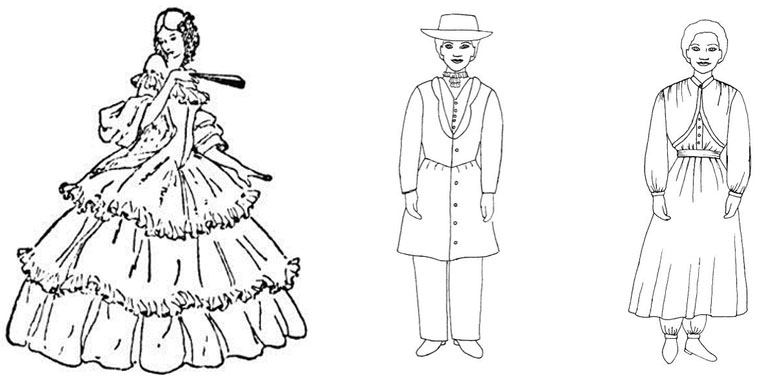A distância exata da parte inferior do vestido até o assoalho não me foi dada em polegadas. ... Mas passaram diante de mim três grupos de mulheres, com seus vestidos das maneiras que seguem, no tocante ao comprimento.
Ellen G. White, Mensages Escolhidas 3, pág 278 / The Review and Herald 08 de outubro de 1867 parágrafo 5
Quanto ao primeiro grupo que passou diante da irmã White, ela reprovou e justificou por que:
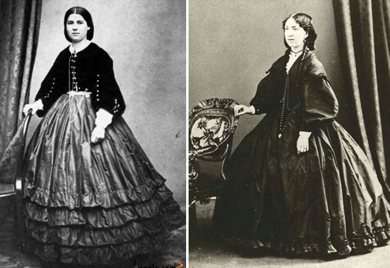O primeiro era do comprimento segundo a moda, sobrecarregando os membros, impedindo o passo, varrendo a rua e juntando as sujidades; do qual declarei plenamente os maus resultados. Esta classe, serva da moda, parecia fraca e doentia.
Ellen G. White, Mensages Escolhidas 3, pág 278 / The Review and Herald 08 de Outubro de 1867 parágrafo 6
Na verdade, o que foi mostrado em visão para a serva do Senhor foi a situação real da igreja, naquela época, o primeiro grupo revelou o uso de saias compridas demais varrendo as ruas, seguindo as modas e colhendo suas consequências.
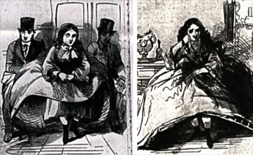Pelo que me foi mostrado, as saias-balão são uma abominação. Eles são indecentes, e o povo de Deus errar, se eles seguirem no mínimo grau, ou dar rosto a esta moda.
Ellen G. White, Testemunhos Para a Igreja 1, pág 277 / The Review and Herald 25 de Junho de 1861 parágrafo 5
Quando viajo em carruagens e trens, tenho frequentemente sido levada a exclamar: "Ó, modéstia, onde está o teu pudor!" Tenho visto muitas mulheres em vagões lotados. E quando tentam avançar, as saias-balão têm de ser erguidas e posicionadas de uma forma indecente. A exposição das formas é dez vezes maior naquelas que usam saias-balão, do que naquelas que não as usam. Se não fosse pela moda, aquelas que tão imodestamente se expõem não seriam vaiadas. Mas a modéstia e a decência precisam ser sacrificadas à deusa da moda. Que o Senhor livre Seu povo desse repugnante pecado! Deus não terá piedade daqueles que são escravos da moda.
Ellen G. White, Testemunhos Para a Igreja 1, pág 277 / The Review and Herald 25 de Junho de 1861 parágrafo 5
Quando o segundo grupo passou em visão, ela revelou:
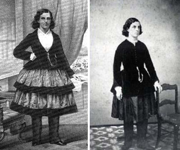O vestuário da segunda classe que passou diante de mim era a muitos respeitos como devia ser. Os membros estavam bem vestidos. Achavam-se livres das cargas que a tirana Moda impusera à primeira classe; fora, porém, a um extremo de curteza que desgostara e suscitara preconceitos a pessoas boas, destruindo em grande medida sua própria influência. Este é o estilo e a influência do "traje americano", ensinado e usado por muitos em "Nosso Lar", Dansville, N. I. Esse não chega aos joelhos. Não preciso dizer que esse estilo me foi mostrado como sendo demasiado curto.
Ellen G. White, Mensages Escolhidas 3, pág 278 / The Review and Herald 08 de Outubro de 1867 parágrafo 7
Nunca devemos imitar Senhorita Dr. Austin ou a Sra Dr. Iorque. Eles se vestem muito parecidos com os homens.
Ellen G. White, Manuscript Releases, vol.5 [Nos. 260-346], pág 380 / Lt 6, 1864 (Setembro de 1864) parágrafo 5
Este segundo grupo também foi reprovado, por ser curto demais.
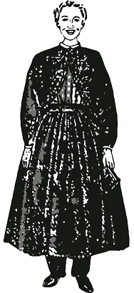Então, passou uma terceira e última classe, onde ela revelou:
Uma terceira classe passou diante de mim com semblantes animados, e passo desembaraçado e lépido. Seu vestuário era do comprimento que descrevi como apropriado, modesto e saudável. Estava umas poucas polegadas acima da sujeira da rua e do passeio e de acordo com todas as situações, como subir ou descer degraus.
Ellen G. White, Mensages Escolhidas 3, pág 278 / The Review and Herald 08 de Outubro de 1867 parágrafo 8
Ela acrescentou que o comprimento deveria atingir a parte mais grossa da perna, cobrindo totalmente os joelhos, evitando deixar as pernas à mostra quando as irmãs se sentassem.
As instruções que consideramos concordam todas em que os joelhos devem estar sempre velados, quer a pessoa esteja de pé, quer sentada, e que o vestido se deve estender o suficiente abaixo dos joelhos para atingir graciosamente a parte mais grossa da perna.
Crede em seus Profetas, pág 212
Essa visão causou dúvidas em todos os campos da igreja, as irmãs queriam saber o que seria as poucas polegadas ou parte mais grossa das pernas, qual o comprimento exato das saias e vestidos, em busca de maiores esclarecimentos lançaram mão de pena e papel enviando inúmeras cartas para a irmã White, que mencionou o fato da seguinte forma:
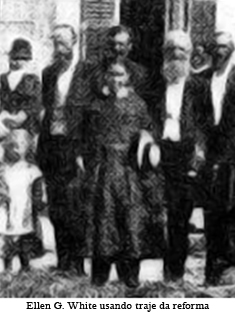Numerosas cartas me chegaram de todas as partes do campo, indagando o comprimento do vestuário que me fora mostrado. Tendo visto a régua aplicada à distância do chão a vários vestidos, e tendo ficado plenamente convencida de que nove polegadas é o mais aproximado do modelo que me foi mostrado, dei esse número de polegadas em Testemunho nº 12 [ver Testemunhos para a Igreja 1: 521 ], como o comprimento apropriado, com o qual é muito desejável a uniformidade.
Ellen G. White, The Review and Herald 08 de Outubro de 1867 parágrafo 11 / Crede em seus Profetas, pág 226
Com uma régua na mão, a irmã White mensurou a distância do chão para as batatas da perna e concluiu que nove polegada seria ideal, o tamanho exato do vestuário da reforma. As nove polegadas não satisfizeram o anseio das irmãs que voltaram a escrever para que a irmã White exigindo mais precisão, queriam uma resposta que não gerasse nenhuma dúvida quanto ao cumprimento do vestuário da reforma, afinal, ele seria adotado por toda a igreja e para uniformizar suas vestes, todas teriam que confeccionar os vestidos exatamente iguais, portanto, para suprir suas curiosidades mais cartas chegaram aos mãos da irmã White que:
Em resposta às cartas de muitas irmãs que faziam perguntas com respeito ao comprimento apropriado do vestido da reforma do vestuário, devo dizer que em nossa parte do Estado de Michigan, adotamos o comprimento uniforme de aproximadamente 23 centímetros acima do chão. Aproveito esta oportunidade para responder a essas perguntas, a fim de poupar o tempo requerido para atender às muitas cartas. Eu deveria ter falado antes, mas esperei até ver algo definido sobre esse ponto no Health Reformer (Reformador da Saúde). Recomendo enfaticamente que haja uniformidade no comprimento do vestido. Diria que aproximadamente 23 centímetros estão de acordo com minhas visões sobre o assunto.
Ellen G. White, Testemunhos Para a Igreja 1, 200, pág 521
Com esta resposta, finalmente a irmã White atendeu os anseios das irmãs e foi precisa ao taxar o comprimento do vestido da reforma em 23 centímetros, como apropriado. Tudo parecia resolvido, no entanto não foi o que aconteceu, o que seria uma solução virou uma preocupação e confusão, tudo isto porque:
É a obra-prima dos enganos de Satanás conservar o espírito humano a pesquisar e conjecturar com relação àquilo que Deus não tornou conhecido, e que não é desígnio Seu que compreendamos. Foi assim que Lúcifer perdeu seu lugar no Céu. Tornou-se descontente porque nem todos os segredos dos propósitos de Deus lhe eram confiados, e desatendeu inteiramente àquilo que foi revelado com respeito à sua própria obra na elevada posição a ele designada. Suscitando o mesmo descontentamento nos anjos sob o seu comando, determinou-lhes a queda. Agora procura imbuir a mente dos homens do mesmo espírito, levando-os também a desatender aos diretos preceitos de Deus.
Ellen G. White, O Conflito dos Séculos, 1985, pág 528
Veja o que fez Satanás, recorrendo a seus antigos engodos, deixou a maioria das irmãs descontentes, passaram a questionar o vestuário da reforma e a comparar outro texto dos escritos da irmã White que também relatava a visão, no entanto, esse texto dizia que o comprimento deveria chegar até o cano das botas, com isto, as irmãs insatisfeitas começaram a encurtar os vestidos até os joelhos, alegando que estava em conformidade com outro testemunha que a irmã White havia escrito. Lógico que a irmã White rebateu detalhando sua visão e negando qualquer distorção entre os textos alegados, esclarecendo o que segue
Caros irmãos e irmãs:
O motivo de eu chamar-lhes novamente a atenção para o assunto do vestuário é que alguns parecem não compreender o que escrevi anteriormente. Alguns que não estão dispostos a crer no que escrevi, estão fazendo esforços para confundir nossas igrejas sobre esse importante assunto.
Alguns afirmam que o que escrevi no Testemunho Para a Igreja n° 10, não concorda com as declarações feitas em meu trabalho intitulado How to Live. Elas foram escritas a partir da mesma visão, consequentemente, não são duas visões, uma contradizendo a outra, como alguns supõem.
Ellen G. White, Testemunhos Para a Igreja 1, 2000, pág 456
A irmã White escreveu dois textos relatando a visão dos três grupos de pessoas que passaram diante dela, em um texto ela ensinou que o comprimento do vestido da reforma era de 23 centimetros ou nove polegadas, como visto acima, em outro texto ela relata a mesma visão decarando que a parte inferior do vestido devia chegar perto do alto do cano das botas das senhoras, veja o texto:
Quando escrevi sobre a questão do vestuário, a visão daqueles três grupos reavivou-se em minha mente de modo tão claro como quando a tive; mas foi-me permitido descrever o comprimento do vestuário em minha própria linguagem, da melhor maneira que me fosse possível, o que eu fiz declarando que a parte inferior do vestido devia chegar perto do alto das botas das senhoras, o que seria necessário a fim de estar acima da sujeira da rua sob as circunstâncias mencionadas anteriormente.
Trajo o vestido, do comprimento mais aproximado do que eu vira e descrevera, segundo me foi possível julgar. Minhas irmãs, no Norte de Michigan, também o adotaram. E ao surgir a questão das polegadas, a fim de assegurar uniformidade quanto ao cumprimento em toda parte, foi trazida uma régua, e verificou-se que o comprimento de nossos vestidos mediava entre oito e dez polegadas acima do chão. Alguns deles eram um pouquinho mais compridos do que o modelo que me fora mostrado, ao passo que outros eram um pouco mais curtos.
Ellen G. White, Mensages Escolhidas 3, 1987, pág 278-279 / The Review and Herald 08 de Outubro de 1867 parágrafo 10
Um grande número de irmãs, dotadas de coração não santificado, aproveitaram o incidente para distorcer os ensinos da irmã White, estas irmãs estavam ávidas por encurtar as vestes, estavam insatisfeitas com o vestuário da reforma, o que obrigou a irmã White a escrever:
Desde que foi impresso em meu livro How to Live um artigo sobre vestuário, têm havido alguns que estão interpretando mal a idéia que eu quis comunicar. Eles têm levado a extremos o significado do que eu quis dizer com respeito ao comprimento do vestido, e evidentemente acharam difícil a questão. Com seus pontos de vista distorcidos sobre o assunto, discutiram a questão do encurtamento do vestido, até que sua visão espiritual tornou-se tão confusa que só podem ver os homens "como árvores que andam" Marcos 8:24.
Ellen G. White, Testemunhos Para a Igreja 1, 2000, pág 462
A igreja caminhava para a apostasia, algumas irmãs acalentavam a moda de usar vestidos longo demais, varrendo as ruas, ao passo que outras adotavam vestidos na altura dos joelhos, as visões apresentadas pela irmã White tinham um claro objetivo:
Minhas visões pretendiam corrigir a moda atual — os vestidos longos demais que se arrastam pelo chão, bem como os vestidos curtos demais que chegam à altura dos joelhos e que são usados por certos grupos. Foi-me mostrado que devemos evitar ambos os extremos. Usando o vestido até a altura do cano da bota da mulher, mais ou menos, evitaremos os males do vestido extremamente longo, e escaparemos aos males e notoriedade do vestido extremamente curto.
Ellen G. White, Testemunhos Para a Igreja 1, 2000, pág 464
A celeuma gravitou em torno da expressão "cano da bota", a irmã White estava se referindo ao cano da bota feminina que chega exatamente até a batata das pernas, no entanto, algumas irmãs interpretram maliciosamente a expressão cano da bota, como autorização da irmã para usar vestidos na altura dos joelhos, alegando que o cano das botas masculinas chagavam até os joelhos, vejam a resposta da irmã White e o exemplo das botas que as irmãs tomaram como modelo para confeccionar seus vestidos na figura ao lado:
A principal dificuldade na mente de muitos é o comprimento do vestido. Alguns insistem em que a expressão "o cano da bota" faz referência ao alto das botas usadas pelos homens, que alcançam quase até os joelhos. Se fosse costume das mulheres usar tais botas, então essas pessoas não teriam responsabilidade em entender o assunto dessa maneira. Mas as mulheres geralmente não usam tais botas. Elas, portanto, não têm o direito de entender como pretendem o que escrevi.
Ellen G. White, Testemunhos Para a Igreja 1, 2000, pág 462
Em seguida, ela explica e chama atenção das irmãs, evidenciando que as mulheres do seu tempo usavam botas de cano curto, que geralmente chegam até a batata das pernas:
Alguns contestam que pela expressão "cano da bota", eu me referi às botas masculinas. Mas por "cano da bota" intentei dizer botas ou polainas comumente usadas pelas mulheres. Houvesse eu imaginado que seria mal-entendida, teria escrito mais claramente. Se as mulheres tivessem o hábito de usar botas de cano alto como os homens, eu poderia ver desculpa suficiente para essa interpretação errônea.
Ellen G. White, Testemunhos Para a Igreja 1, 2000, pág 463
Indignada com a malícia das irmãs, fingindo não entender que o testemunho da lavra da irmã White estava deveras, se referindo a botas femininas, isto é muito claro no texto, a serva do Senhor reprende como indescupalvel tal entendimento e explica:
Não posso encontrar desculpa razoável para as pessoas entenderem mal e perverterem o que eu quis dizer. Ao falar do comprimento do vestido, se eu quisesse me referir às botas de cano alto que chegam quase até os joelhos, por que teria acrescentado "conquanto deva ser suficientemente curto para não roçar a sujeira das calçadas e ruas, sem ser preciso levantá-lo com a mão"?
Ellen G. White, Testemunhos Para a Igreja 1, 2000, pág 463
E apela para a sinceridade das irmãs que cultivam a natureza divina, não rejeitarem a luz que foi dada acerca do vestuário da reforma, advertindo as irmãs que agiram maliciosamente a consequência de colher os frutos da natureza pecaminosa que estavam alimentado:
Aqueles que me ouviram falar sobre esse assunto agirão segundo a luz que lhes foi dada. Cumpri meu dever; dei meu testemunho. Os que me ouviram e leram o que escrevi devem agora assumir a responsabilidade de receber ou rejeitar a luz dada. Se se aventurarem em ser ouvintes esquecidos e que não "fazem a obra" (2 Reis 22:5), assumirão os próprios riscos e serão responsáveis diante de Deus pela conduta que seguirem.
Ellen G. White, Testemunhos Para a Igreja 1, 2000, pág 523
Estava evidente, que as irmãs não queriam adotar o vestuário da reforma apresentado em visão, por achar comprido demais e fora da moda, então a irmã White reprovou a conduta anticristã e condenou a resistência a uma revelação divina:
Quando lhes é apontado o erro, muitas exclamam prontamente: "Ora, pois, tal tipo de vestido seria fora de moda!" E se for assim? Eu desejaria que fôssemos antiquadas a respeito de muitas coisas.
Ellen G. White, Testemunhos Para a Igreja 1, 2000, pág 413
Diante de tal situação, dessume-se com uma lépida reflexão, que a Igreja não pode esmaecer, afinal ela é portadora de uma verdade axiomática em toda sua doutrina, inclusive na séria questão do vestuário. Por fim, o vestuário da reforma que seria uma benção, foi deturpado, e os límpidos ensinos da irmã White que deveriam corrigir os males infiltrados na igreja gerou muita confusão e reprovação quando as irmãs passaram a vestir curto demais, alegando estarem acobertadas pelos testemunhos da irmã White, o que gerou revolta das irmãs e irmãos que alimentavam o zelo pala reforma do vestuário e pela doutrina de Cristo. A seguir vamos estudar o desfecho dessa grande celeuma levantada na igreja na época dos pioneiros adventistas. Qual foi a ordem do Senhor, para conter a apostasia generalizada.
A Rejeição e Exclusão do Vestido da Reforma
O principal motivo da rejeição e posteriormente a eliminação do vestuário da reforma na igreja foi a idolatria, as irmãs se recusavam a usar um vestuário singelo, não queriam vestir-se diferente do mundo. O propósito de Deus era e sempre será manter seu povo separado e livre da tirania da moda e dos prazeres seculares, anseia o Senhor ver seu povo dotado de natureza divina, amando e adorando unicamente o seu Criador, obedecendo todos os seus Mandamentos, Estatutos e Preceitos. No entanto, a irmã White declara uma triste nota, que:
O povo de Deus tem, em grande medida, perdido seus traços distintivos, gradualmente se modelando segundo o mundo e mesclando-se com ele, até que em muitos respeitos se torna semelhante a ele. Isso desagrada a Deus. Ele os dirige, assim como conduziu os filhos de Israel do passado, a saírem do mundo e abandonarem suas práticas idólatras, não seguindo o próprio coração (pois que esse não é santificado) ou sua visão, que os têm conduzido para longe de Deus e os unido ao mundo.
Ellen G. White, Testemunhos Para a Igreja 1, 2000, pág 525
Infelizmente a busca pelos prazeres e modas do mundo, estão inerentes a natureza pecaminosa, portanto, estes fatos não aconteceram unicamente no tempo da irma White, hoje, eles estão presentes, nota-se uma resistência maior das irmãs em vestir-se conforme a norma. Quando a natureza pecaminosa impera, a dureza de coração e a insubmissão são patentes, ainda que a ordem venha do céu, conforme escritos da irmã White revelando a resistência das irmãs em não abandonor a moda das saias-balão:
Foi-me mostrado que as saias-balão são uma abominação, e a influência de todo observador do sábado deve ser uma repreensão a esta moda ridícula, que têm sido uma mostra de iniquidade e que surgiu de uma casa de má fama em Paris. Foram-me mostradas mulheres que menosprezarão a instrução, mesmo que ela venha do Céu. Inventarão alguma desculpa para evitar o testemunho direto, e em desafio de toda a luz dada usarão saias-balão porque é moda, correndo o risco das consequências.
Ellen G. White, Testemunhos Para a Igreja 1, 2000, pág 270
Quando o Senhor conduziu o seu povo no passado, o antigo Israel, as regras eram claras e precisas, a trangressão de Israel, resultava na separação de Deus do seu povo com graves consequências, era acompanhada de uma farta colheita dos frutos de sua rebelião, eram castigados, com fome, seca, escravidão e opressão, até voltar-se para o Senhor pedindo clemência. Temos o exemplo de Jacó, sofreu amargamente os resultados funesto da fraude que cometeu contra seu irmão, instigado por sua mãe, pagou o preço por não confiar e esperar no Senhor, que certamente tomaria as providências no tempo certo e de maneira apropriada para que ele fosse o patriarca, resultado, nunca mais viu sua mãe, sofreu nas garras do seu tio, no entanto, quando retornou com sua família, seus rebanhos e servos, ele aprendeu a confiar em Deus e deu uma ordem exata para seus acompanhantes: Genesis 35:2. A ordem do Patriarca Jacó foi clara, abandonar os ídolos e mudar suas vestes, ou seja, ele não estava se referindo apenas as vestes artificiais, mas, a transformação do coração da idolatria para adoração e entrega incondicional ao Deus único e verdadeiro. Embora sua esposa amada Raquel, escondeu debaixo de uma cela o ídolo que pertencia a seu pai e levou consigo. Me permitam esclarecer, que o apego à idolatria hoje é mais contundente do que nos dias do antigo Israel, em nossos dias, os ídolos são as modas, amor ao vestuário, uso de joias, as músicas, anéis, aliança de casamento, maquiagem, existe uma gama de ídolos para todos os gostos, basta deixar o coração desguarnecido do escudo protetivo da natureza divina de Cristo.
Quando o coração não está santificado pela natureza divina, afloram os frutos da natureza pecaminosa, foi exatamente isso que aconteceu com o vestuário da reforma, era impopular e fizeram questão de não seguir os conselhos da forma que foi apresentado pela irmã White, que relatou com tristeza:
Quando viajo de um lugar para outro, observo que o traje da reforma do vestuário não é corretamente representado, e sou levada a concluir que algo mais definido precisa ser dito para que possa haver uniformidade a esse respeito. Esse estilo de vestuário é impopular, e por essa razão simplicidade e bom gosto precisam ser exercidos por aquelas que o adotam. Já falei sobre esse ponto, mas algumas não seguiram os conselhos dados. Deveria haver uniformidade quanto à questão do comprimento do vestido da reforma entre os observadores do sábado. Aquelas que se tornam singulares por adotá-lo, não deveriam pensar sequer por um momento que é desnecessário mostrar ordem, bom gosto e simplicidade. Antes de adotar o vestido da reforma, nossas irmãs precisam adquirir modelos de calças e bata para usar com ele. É um grande prejuízo para a reforma do vestuário que pessoas apresentem à comunidade um estilo que necessita de reforma em cada particular, antes que possam representar devidamente o traje da reforma. Esperem, irmãs, até poderem usar o vestido certo.
Ellen G. White, Testemunhos Para a Igreja 1, 2000, pág 521
Em alguns campos da igreja o vestuário da reforma foi bem apresentado e acolhido pelas irmãs, que passaram a usá-lo conforme o modelo apresentado na visão, nove polegadas, ao passo que, em outros campos, o vestido apresentado como solução para salvagurdar a igreja da tirana moda corruptora foi propositadamente mal apresentado e desfigurado com enfeites, batas sem mangas e apertados comprimindo o corpo, vale lembrar, que os escritos da irmã White estão recheados de repreensões contra o uso de vestidos justos ao corpo, prendendo a circulção sanguinea e deixando o corpo com as marcas do sensualismo. Essa atitude das irmãs forçou a irmã White a protestar e rejeitar todos estes modelos declarando-os como DEFORMADOS, confira o texto:
Em alguns lugares há grande oposição ao vestido curto. Mas quando vejo alguns modelos usados pelas irmãs, não me espanto de que o povo esteja escandalizado, condenando o traje. Onde o vestido é apresentado como deveria ser, todas as pessoas sinceras são constrangidas a admitir que ele é modesto e conveniente. Tenho visto em algumas de nossas igrejas todos os tipos de vestidos da reforma, todavia, nenhum atende à descrição que me foi apresentada. Alguns vestidos aparecem com calças brancas de musselina, mangas brancas, enfeites de musselina negra e uma bata sem mangas, do mesmo tecido do vestido. Algumas têm um vestido de morim com calças cortadas segundo seus próprios moldes e não segundo o "modelo", sem goma ou entretela para lhes dar forma, e bem apertado nos membros. Certamente esses vestidos nada têm de bom gosto ou simplicidade. Eles não se recomendam a pessoas sensíveis e de bom discernimento. Em todos os sentidos da palavra, é um vestido deformado.
Ellen G. White, Testemunhos Para a Igreja 1, 2000, pág 521
A tão esperada benção vincalada ao vestido da reforma, tranformou-se em escândalo, houve rejeição por parte dos crentes sinceros, e principalmente por Ellen White, que retirou o apoio ao vestido da reforma na igreja, como também, nunca mais usou esse modelo de vestido.
Quanto aos textos, apresentados alhures, em que a irmã White se refere "aquirir modelos de calças e bata para vestir com eles", o que realmente ela quis ensinar? será que os pastores Adventists tem razão? Será que a irmã White liberou o uso de calças "femininas" na Igreja? Alguns pastores Adventistas estão utilizando estes textos isolados para defender essa famigerada tese, no entanto, essas calças não tem nada a ver com o que eles defendem como "calças femininas". A irmã White chegou a mencionar que a calça deveria combinar com o vestido, por certo ela não estava falando do traje americano, que foi totalmente condenado por ela e pela direção da Igreja.
Qualquer que seja o comprimento do vestido, as mulheres devem agasalhar os membros tão completamente como os homens. Isso pode ser feito usando-se calças forradas, franzidas por cordões presos ao redor dos tornozelos, ou calças largas que se afinam na parte inferior. Devem elas ser suficientemente compridas para atingir o nível dos calçados. As pernas e tornozelos são assim protegidos contra as correntes de ar.
Ellen G. White, Testemunhos Para a Igreja 1, 2000, pág 459 / Mensagens Escolhidas 2, pág 478 / How to Live, pág 399
O motivo da aludida recomendação era a proteção das pernas e tornozelos contra corrente de ar, eram peças íntimas, note que ela recomenda usar por baixo do vesido, portanto, não cabe qualquer intrpretação forçada para adotar o uso da calça feminina como conhecemos hoje, embora os pastores arrivistas, contrariam esta verdade introduzindo a moda da calça feminina em suas igrejas a qualquer custo, como prova contundente da apostasia que grassa no seio evangélico.
Para dirimir qualqur dúvida e entender com maior segurança os textos da irmã White no tocante ao uso de calças femininas, é mister pesquisar qual era o tipo de calça que as mulheres usavam no Século XIX. Com efeito, vamos descobrir que eram calças bufantes por baixo das saias, era parecida com uma bermuda larga amarradas em baixo nos joelhos, que deveriam combinar com as saias e o vestido, eram essas as calças que a irmã White se referiu nos textos, eram usadas como peça íntima e não como calça "feminina" dos nossos dias, conforme descrição dos modelos extraidos de textos da Internet:
Na segunda metade do século, a opção era usar as famosas ceroulas e calças bufantes com renda debaixo de uma coleção de saias. O charme, especialmente na era vitoriana (1837-1901), era a combinação da calça com as saias e os vestidos.
Disponível em: <http://moda.ig.com.br>
Conforme podemos comprovar nos modelos apresentados a seguir, trata-se de calças curtas, usadas como calcina por baixo do vestido, tolhendo qualquer especulação de pastores tendenciosos, ávidos para acolher um diluvio de mundanismo em suas igrejas, torcendo as Escrituras para forçar o entendimento que a irmã White aceitava usar calças femininas combinando com o vestido, quando na verdade ela está se reportando a roupas íntimas.
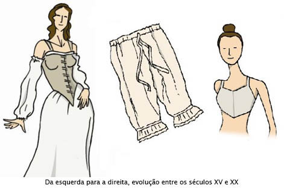Assim alegavam na época, querendo evitar que as mulheres usassem calcinhas. Nos séculos XVIII e XIX, espécies de calças mais curtas eram utilizadas como calcinhas, iam até a altura do joelho e tinham uma abertura na virilha.
Calças compridas e largas que, a princípio, apareciam por baixo das saias. No início do século XIX, haviam-se tornado peça íntima generalizada. Folgadas, em geral, eram feitas de algodão e linho. À medida que silhuetas mais delgadas entraram em moda no início da década de 1900, foram substituídas por peças menos volumosas, como os "macaquinhos". Na versão mais comprida, são conhecidas como pantalettes.
Dicionário fonte: Dicionário de Moda
Restou comprovado, sem o menor resquício de dúvidas, que as calças referendadas pela irmã White nos dois últimos textos apesentados, autorizando as irmãs usarem, estão se referindo ao uso de peças íntimas. Voltando ao contexto do vestuário da reforma, no texto seguinte a irmã White aponta o grande problema a ser enfrentado na Igreja, não só no preceito do vestário, mais em toda a doutrina, na verdade ela está repetindo o que Jesus Lucas 9:23. Com certeza, não foram todos que ouviram os ensinamentos de Jesus que o seguiram, hoje não é diferente, para os renitentes que dizem serem discípulos de Jesus, todavia, não querem seguir os ensinamentos da doutrina de Cristo, ele disse Lucas 14:27. O requisito para ser discípulo de Cristo é óbvio, cada um tem uma cruz para carregar, o problema é quem vai tomar a natureza divina de Cristo emprestada para carregar a cruz com amor, submissão e dedicação, e quem vai alimentar a natureza pecaminosa para cortar um pedaço da cruz, ou seja, da doutrina, acreditando que com a cruz mais leve, vai chegar mais rápido ao seu destino. Foi exatamente isso que a irmã White vislumbrou na igreja, as irmãs se recusaram carregar sua cruz, acharam pesada e humilhante a singeleza do vestuário da reforma, indigno de ser usado por elas, se afastando da simplicidade do Evangelho, se achando acima da doutrina de Cristo, segundo relatos da irmã White:
Para muitos, a reforma do vestuário é muito simples e humilhante para ser adotada. Eles não podem erguer a cruz. Deus atua por meios simples para separar e distinguir Seus filhos do mundo, mas alguns estão tão afastados da simplicidade da obra e métodos de Deus, que estão acima dela e não nela.
Ellen G. White, Testemunhos Para a Igreja 1, 2000, pág 524
Era evidente a inclinação da maioria das irmãs para as modas pendentes do mundo, ela ficou profundamente preocupada com a falta de conversão, e de natureza divina no coração das irmãs, era preciso fazer alguma coisa para mitigar a apostasia que estava adentrando na igreja, a esse respeito a irmã White relatou:
Algo deve ser feito para diminuir o envolvimento do povo de Deus com o mundo. O traje da reforma é simples e saudável, todavia, há uma cruz nele. Agradeço a Deus pela cruz e alegremente curvo-me para erguê-la. Temo-nos unido tanto ao mundo que perdemos de vista a cruz e não desejamos sofrer por amor a Cristo.
Ellen G. White, Testemunhos Para a Igreja 1, 2000, pág 525
Ela lamentou a negativa das irmãs em levar a cruz, os raios de luz que o Senhor havia derramado, com a visão do vestuário da reforma, tinha por finalidade iluminar a penumbra da igreja e deixala impoluta, no entanto foi rejeitada, fato que deixou a irmã White entristecida, porém não desanimada para levantar a dourina de Cristo com argumentos contundente e convincente, asseverando que Deus iluminou a igreja com a visão do vestuário da reforma, para a igreja se trajar de forma diferente do mundo como deve ser, as imãs deveriam usá-lo alegremente, ela alerta que Jesus, o filho de Deus, foi ridicularizado por defender a causa do Pai, como as irmãs foram capazes de negar sofrer pelo Redentor, não somos maiores do que o nosso Mestre, se ele carregou a cruz, sofreu como ovelha muda, nós deveriamos carregar nossa cruz com prazer. O mundo está no poder de Satanás, portanto, sempre vai contestar e ridicularizar a doutrina de Cristo, a irmã White chama atenção da igreja para esse particular:
Não precisamos inventar uma cruz, mas se Deus no-la apresenta, deveríamos alegremente tomá-la. Ao aceitar a cruz, somos distinguidos do mundo, que não nos ama e ainda ridiculariza nossa peculiaridade. Cristo foi odiado porque Ele não era do mundo. Podem Seus seguidores esperar melhor sorte que seu Mestre? Se não sofremos censura ou desdém do mundo podemos ficar alarmados, pois é nossa conformidade com o mundo que nos torna tão semelhantes a ele, que não desperta seus ciúmes ou sua malícia. Não há confronto de caráter. O mundo despreza a cruz. "Porque a palavra da cruz é loucura para os que perecem; mas para nós, que somos salvos, é o poder de Deus." 1 Coríntios 1:18. "Mas longe esteja de mim gloriar-me, a não ser na cruz de nosso Senhor Jesus Cristo, pela qual o mundo está crucificado para mim e eu, para o mundo." Gálatas 6:14.
Ellen G. White, Testemunhos Para a Igreja 1, 2000, pág 525
Por fim, a confusão foi generalizada, as irmãs recusavam vestir o traje da reforma, outras criaram modelos deformados, com enfeites e modas, ainda outras entenderam que cano da bota autorizava confeccionar vestidos curto na altura dos joelhos, ao passo que a maioria dos cristãos devotos achavam o aludido vestido muito curto, obrigando o Presidente da Associação Geral da época, George I. Butler, a colocar um basta na caótica situação, proibindo definitivamente o uso do chamado vestuário da reforma, em 1883, onde ele escreveu:
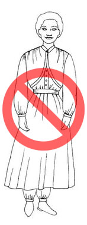Chegou-se a um ponto em que se tornou evidente que o vestido curto, destinado a ser um benefício para nosso povo, veio a ser real entrave à causa, devido à orientação irrazoável de muitos entre nós a esse respeito. A irmã White deixou de falar em seu favor, nem o usou mais ela própria, e dentro em pouco ele deixou de ser geralmente usado.
George I. Butler - The Review and Herald Supplement, 14 de agosto de 1883 / Crede em seus Profetas, pág 265
"Por que esse vestido foi deixado de lado? E por que razão a reforma do vestuário deixou de ser defendida?"
Em poucas palavras declararei a razão para essa mudança. Embora muitas de nossas irmãs aceitassem essa reforma por princípio, outras se opuseram ao estilo simples e saudável de vestuário que ela defendia. Requeria muito esforço introduzir essa reforma entre o nosso povo. Não foi suficiente apresentar perante nossas irmãs as vantagens de tal vestido, e convencê-las de que obteriam a aprovação de Deus. [...]
Àquelas que o adotaram relutantemente, por um senso de dever, tornou-se ele um jugo pesado. Outras ainda, que eram aparentemente as reformadoras mais zelosas, manifestaram uma triste falta de ordem e capricho em seu traje.
Ellen G. White, Testemunhos para a Igreja 4, pág 635-636
O vestuário da reforma, que uma vez foi defendido, demonstrou ser uma batalha a todo passo. Membros da Igreja, recusando adotar este saudável estilo de vestuário, causavam dissensão e discórdia. Com algumas pessoas não havia uniformidade e gosto na preparação do vestuário, segundo fora claramente apresentado para elas. Isso serviu de motivo para falatórios. O encargo de defender o vestuário da reforma foi removido porque o que tinha sido dado como uma bênção transformou-se numa maldição.
Ellen G. White, Mensagens Escolhidas 3, pág 253 / Manuscript Releases, vol. 5, pág 404 / Carta 19, 1897, 04 de julho de 1897, parágrafo 7
O Senhor não se movia sobre qualquer uma de nossas irmãs a adotar o vestuário da reforma. As dificuldades que nós tivemos uma vez para atender não devem ser trazidos novamente. Havia tanta resistência entre os nossos próprios povos que foi removido a partir deles.
Ellen G. White, Manuscript Releases, vol. 5, pág 405 / Carta 19, 1897, 04 de julho de 1897, parágrafo 15
Eu imploro ao nosso povo que ande cuidadosa e prudentemente diante de Deus. Siga o costume de se vestir na reforma de saúde, mas não novamente introduzir o vestido curto [23cm] e calças a menos que tenha a palavra do Senhor para isso.
Ellen G. White, Manuscript Releases, vol. 5, pág 405 / Carta 19, 1897, 04 de julho de 1897, parágrafo 17
O Senhor não indicou que seja dever de nossas irmãs voltar à reforma do vestuário.
Ellen G. White, Mensagens Escolhidas 2, pág 479 / Manuscript Releases, vol. 1, pág 33 / The Story of Our Health Message, pág 44 / Carta 19, 1897, 04 de julho de 1897, parágrafo 8
Note como o vestido das nove 9 (nove) polegadas acima do chão era chamado de vestido curto. A irmã White, ao deixar de usá-lo passou por certo a usar um pouco mais comprido, mas, de qualquer forma, foi retirada a questão da medida, porque estava trazendo confusão na igreja. Não obstante, a irmã White recomendou o uso de vestidos curtos nos labores domésticos, segundo fonte de sua lavra, ela tinha apenas um desse vestido, que era um pouco mais curto do que o vestido de uso habitual, isto não quer dizer que as irmãs tenham um vestido curto em casa e um vestido comprido na igreja, veja o que ela explicou os motivos quando escreveu:
Com relação ao uso de vestido curto, gostaria de dizer que tenho apenas um, que não é senão um dedo mais curto do que os vestidos que normalmente uso. Visto-o ocasionalmente. Eu me levantava cedo no inverno, e pondo meu vestido curto, que não necessitava ser erguido com a mão para não se arrastar na neve, fazia vigorosas caminhadas de dois a três quilômetros antes do desjejum. Usei-o várias vezes para ir ao Escritório, quando era obrigada a andar pela neve pouco densa, úmida e barrenta.
Ellen G. White, Testemunhos Para a Igreja 1, 2000, pág 464
Para espancar qualquer tipo de dúvidas ou mal intrepretação, ela assegurou que o comprimento deve atingir um pouca abaixo da pate alta da bota feminina, de cano curto, como também, evitar o comprimento que varre as ruas, essa é a medida recomendada para os vestuários utilizadas na lida doméstica, a exemplo de um único vestido dessa medida que ela possuia, conforme escritos de sua lavra, vejam:
O vestido deve atingir um pouco abaixo da parte alta da bota, mas curto o suficiente para não varrer a sujeita das ruas e calçadas, sem precisar erguê-lo com a mão. Um vestido ainda mais curto do que esse seria apropriado, conveniente e saudável para as mulheres quando nas lides domésticas, especialmente para as que são obrigadas a executar trabalho ao ar livre.
Ellen G. White, Testemunhos Para a Igreja 1, 2000, pág 461 / Mensagens Escolhidas 2, pág 478 / How to Live pág 399 / The Review and Herald 06 de fevereiro de 1900, Art. B Parágrafo 11
Mais uma vez resta o impasse, afinal de contas, qual será a medida exata entre cano da bota e comprimento que varre a rua? Essa é a dúvida, ainda hoje, no entanto não restam dúvidas que não podemos adotar "calças femininas" ou traje americano, bloomer, saias-balão, vestuários curtos ou compridos demais. A irmã White responde todas essas indagações com um ASSIM DIZ O SENHOR, portanto, esta recomendação será definitivamente adotada como norma do vestuário para esta Igreja, todos as irmãs deverão seguir esse padrão ensinado pela irmã White, depois de todas as controvérsias causados pela veste da reforma de 9 (nove) polegadas, confira a resposta da irmã White:
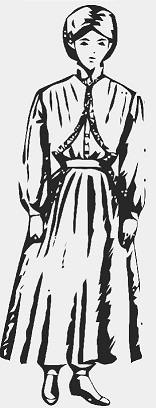Cremos não estar de conformidade com a nossa fé vestir-se de acordo com o traje americano, usar saias-balão, ou ir ao extremo de vestir compridos vestidos que varrem as calçadas e ruas. Caso as mulheres usassem seus vestidos deixando um espaço de uma ou duas polegadas entre a sujeira das ruas, seus vestidos seriam mais modestos, e poderiam ser conservados limpos muito mais facilmente e durante mais tempo. Esses vestidos estariam de conformidade com a nossa fé.
Ellen G. White, Testemunhos Para a Igreja 1, 2000, pág 461 / Mensagens Escolhidas 2, pág 478 / How to Live pág 399 / The Review and Herald 06 de fevereiro de 1900, Art. B Parágrafo 11
Depois de tanta controvérsia e confusão por causa do vestido de nove polegadas, a irmã White taxou a medida exata do vestuário feminino, uma ou duas polegadas do chão, é esta a medida que vamos adotar. Espero e confio que todas as dúvidas foram espancadas e todas as irmãs devem olhar para essa luz, não como uma cruz, mas, como uma devoção em representar tão bem o símbolo da atureza divina de Cristo, o vestuário.
Por fim, permitam-me exemplificar acerca do vestuário comprido demais, o que ele causava de desconforto, mesmo assim era tolerado por puro amor a moda
Se ela vai para o jardim a passear ou trabalhar entre as flores, para aproveitar o refrigerante ar matutino, a menos que as segure com ambas as mãos, suas saias arrastam pela lama e o orvalho, até que ficam úmidas e enlameadas. A moda se apega a essa roupa, que passa a ser usada nesse caso como uma espécie de esfregão. Isto é excessivamente inconveniente. Mas por amor da moda precisa ser suportado.
Ellen G. White, The Review and Herald 14 de abril de 1868, Art. A Parágrafo 7 / A Reforma do Vestuário, pág 4 / Crede em seus Profetas, pág 200
É repugnante para um cristão, suportar todo o desconforto de um vestuário impróprio, por puro amor à moda, e recusar usar um vestuário decente, confortável que represente Cristo e sua doutrina. Mediante o exposto, restou comprovado a importância de manter firme o preceito do vestuário, necessitamos de uma grande reforma em toda a igreja, é chegado o momento de cada um decidir se vai obedecer aos preceitos de Deus ou deixar a igreja. Segundo White, Serviço Cristão, página 42, reforma significa reorganização, mudança de ideias e teorias, hábitos e práticas. Não podemos ceder ao pecado da condescendência permitindo que a moda prolifere no seio da igreja, arrastando consigo seus costumes e ídolos, é preciso fecharmos as portas que Satanás está empurrando tentando abrir, afinal:
Há sobre nós, como um povo, um terrível pecado — termos permitido que os membros de nossa igreja se vistam de maneira incoerente com sua fé. Cumpre erguer-nos imediatamente, e fechar a porta contra as seduções da moda. A menos que isso façamos, nossas igrejas se tornarão desmoralizadas.
Ellen G. White, Testemunhos Seletos 1, 1984, pág 600